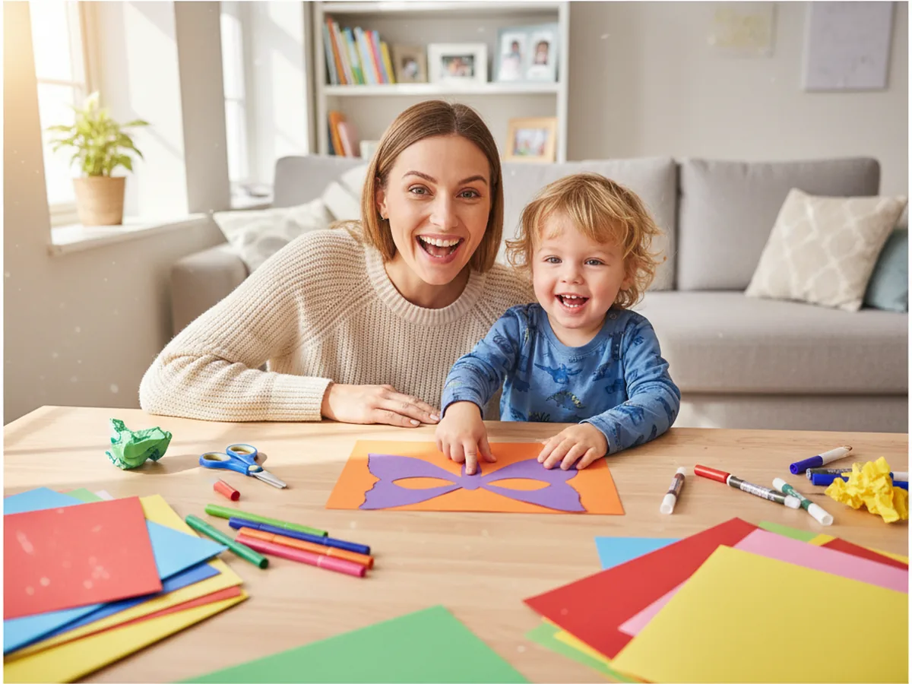
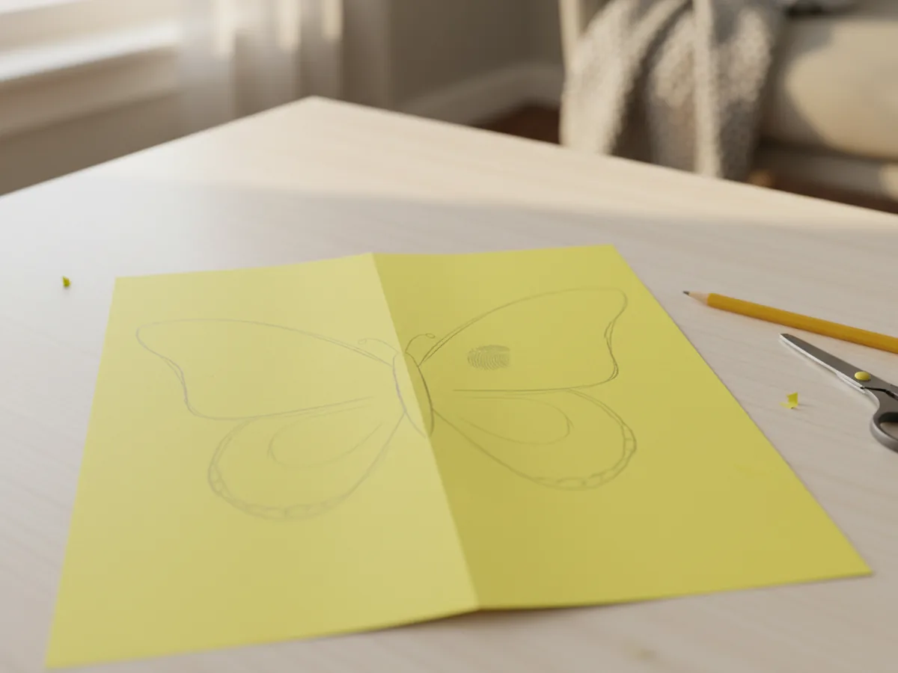
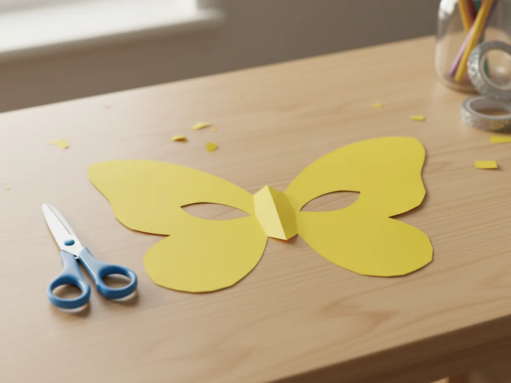
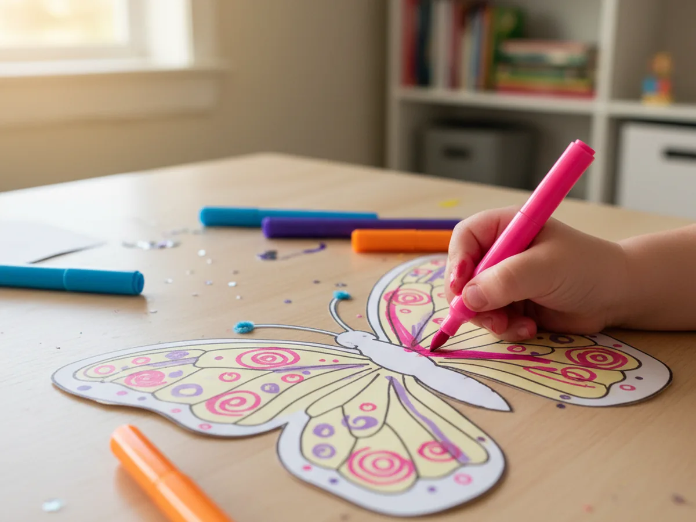
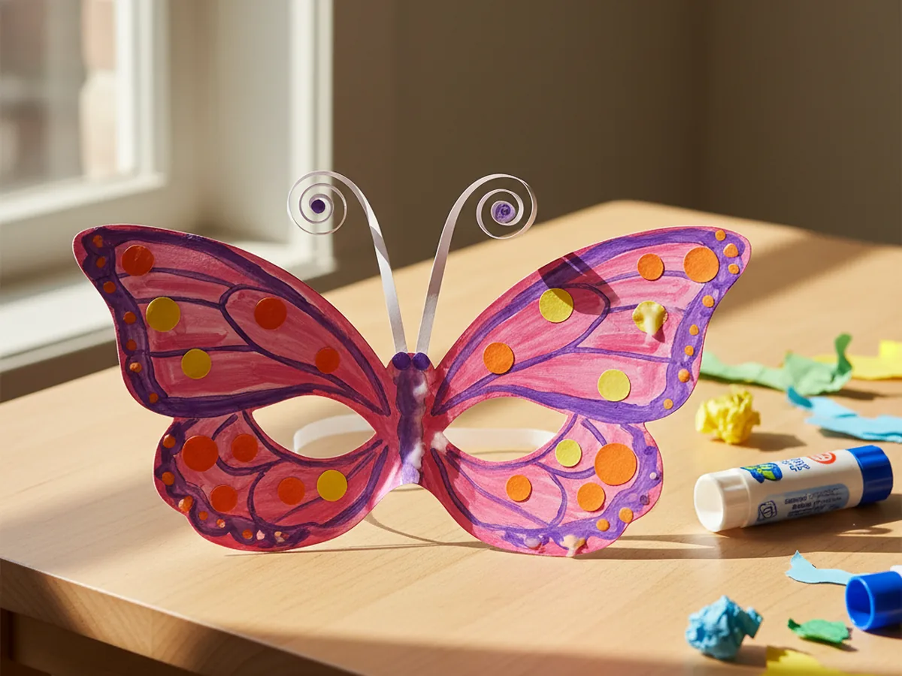
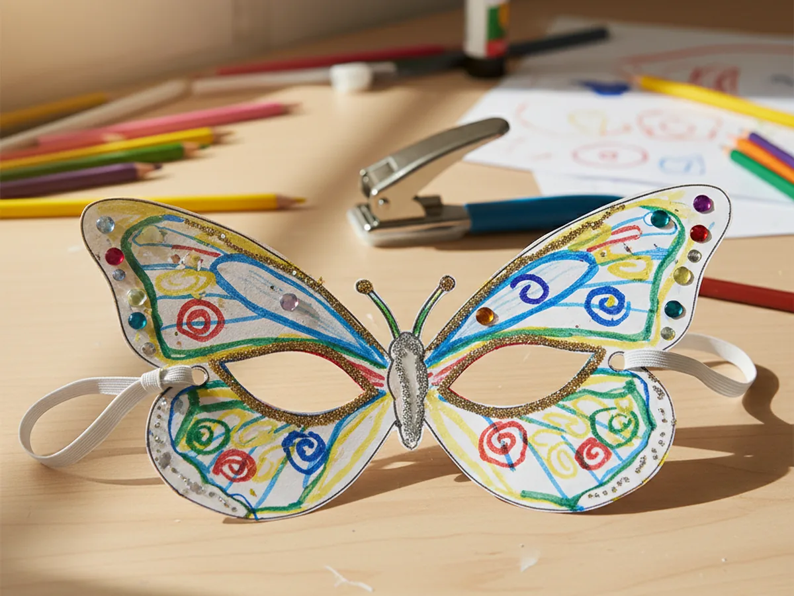
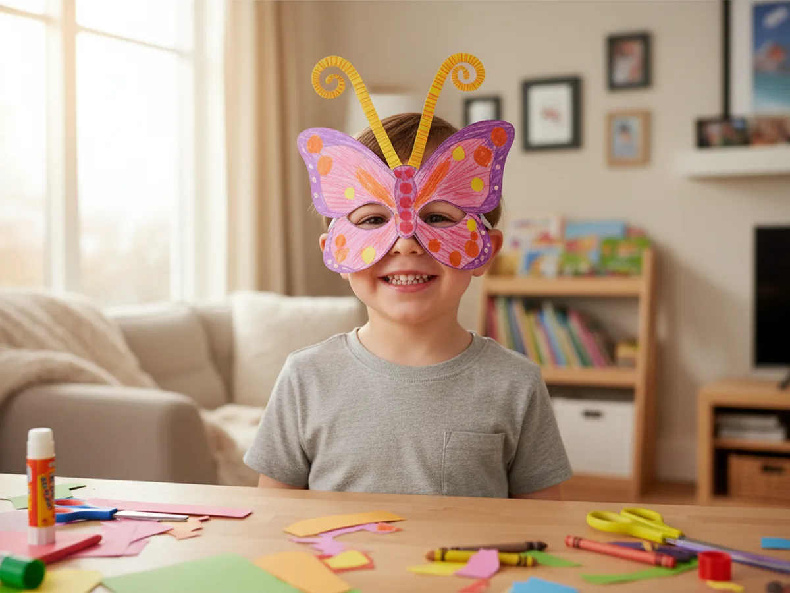

A paper mask craft is one of those rare activities where kids feel the magic the moment they put the finished piece on their face. One second it is a flat sheet of cardstock, and a few steps later it is a wearable butterfly that your child made entirely with their own hands. The transformation never gets old. 🦋
This particular paper mask craft for kids keeps things simple and low-mess on purpose. You do not need any special tools or fancy supplies. Just colorful construction paper, some washable markers, a hole punch, and a bit of elastic cord. The whole project takes about 30 minutes, and the result is so cheerful and cute that your child will want to wear it all afternoon. It is the kind of craft that goes from the craft table straight to a little fashion show in the living room.
Why Kids Love This Craft
There is something about making a mask that feels genuinely exciting for young children. It is not just a picture to hang on the wall or a decoration to sit on a shelf. It is something they wear, something they show off, something that becomes part of play. For little ones, the line between "craft project" and "costume" is a very short one, and this paper mask craft lives happily right on that line.
Beyond the play factor, this project builds real skills in a very gentle way. Cutting a curved mask shape develops scissor control and hand strength. Decorating the wings with patterns and colors gives children a chance to make their own creative choices. Threading the elastic is a satisfying fine motor challenge for older kids. And the moment when the mask is on and the mirror comes out, that pride on a child's face is genuinely priceless.
Because every mask ends up slightly different, no two children make the same result. Some go for bold, rainbow swirls. Others prefer soft pastels. Some load the wings with paper dots and spirals. Others keep it clean and simple. All of those choices belong entirely to the child, and that sense of ownership over the finished piece is exactly what makes this paper mask craft so rewarding.

What You'll Need
Here is everything you need to make this paper butterfly mask craft. It all fits on a small table and takes less than a minute to set up.
- Crayola Construction Paper Bulk Pack (480 sheets, 10 colors), pick one bright sheet per mask, or layer two colors for a two-tone look.
- Fiskars Training Scissors for Kids, spring-action and blunt-tipped, safe and easy for ages 3 and up.
- Crayola Ultra Clean Washable Markers (40 colors), the wide range of colors makes decorating the wings extra fun.
- Emraw Single Hole Paper Punch, for making clean holes on each side of the mask to attach the elastic.
- Hollosport Round Elastic Cord (3mm, white), cut to about 14 inches per mask and tie a knot at each end to hold it in place.
- A pencil, for tracing the mask shape before cutting.
- A glue stick, for attaching paper decorations to the wings.
- Scrap paper in contrasting colors, for cutting out decorative dots and shapes to glue onto the wings.
Step-by-Step Instructions
This paper mask craft step by step is easy to follow even for first-timers. Just go through one step at a time and let your child lead wherever they can.
Step 1: Cut the Butterfly Mask Shape
Start by folding a sheet of cardstock or construction paper in half widthwise. On the folded side, draw half of a butterfly wing shape starting at the fold: a wide curved top wing and a smaller rounded bottom wing, meeting at a narrow center point. The whole thing should span roughly half the page. When you cut along the pencil line and open the paper back up, you get a perfectly symmetrical butterfly mask without any guesswork. This fold-and-cut technique saves so much time and takes away any stress about making the two sides match.
If your child is old enough, let them do the cutting with supervision. If they are very young, trace and cut yourself and save the decorating steps for them.

Step 2: Cut Out the Eye Holes
With the mask lying flat, gently hold it up to your child's face and use a pencil to lightly mark where each eye lands. Then put the mask back on the table and draw two small ovals just inside those marks. The ovals should be big enough for your child to see through comfortably but not so big that the mask loses its shape. An adult should cut the eye holes using the tip of the scissors, especially for younger children. Start by poking the tip through the center of each oval and then carefully cutting outward in a circle until the hole is complete.

Step 3: Color and Decorate the Wings
This is the step children wait for. Set out the washable markers and let your child go to town on both wings of the paper mask craft. There are no rules here. Some children love covering every inch in bright color blocks. Others prefer swirling designs, rainbow stripes, or careful polka dots. Encourage them to fill in both wings so the finished mask feels bold and lively. Even simple color blocking, blue on one half, pink on the other, looks wonderful when the mask is on.
For younger toddlers, this is a great step to do together. You decorate one wing while your child does the other, and you end up with a mask that has two different personalities that somehow look perfect side by side. 🎨

Step 4: Add Paper Details and Antennae
Once the coloring is done, it is time to add some texture and dimension to the paper butterfly mask. Cut small circles, teardrops, and oval shapes from scraps of contrasting paper and glue them onto the wings as decorative spots. A few well-placed dots in a contrasting color can make the mask look strikingly beautiful. For the antennae, cut two thin strips of paper about 4 inches long and roll them tightly around a pencil to create a slight curl. Glue the straight ends side by side to the top center of the mask, letting the curled ends spring upward. The antennae add so much charm and really complete the butterfly look. ✨

Step 5: Punch the Holes and Attach the Elastic
Use the single hole punch to make one clean hole on the outer edge of each wing, roughly at eye level. The holes should be far enough from the edge that the paper will not tear when the elastic pulls on them. Cut a piece of elastic cord about 14 inches long. Thread one end through the hole on the left side of the mask and tie a secure double knot so the cord cannot pull back through. Repeat on the right side, adjusting the length of the elastic so it sits comfortably around the back of your child's head without feeling too tight or too loose. Trim any excess cord after tying.

Step 6: Try It On and Show It Off
Slip the mask over your child's face and adjust the elastic for a comfortable fit. Take a good look at what you made together. It started as a single flat piece of paper and it is now a wearable piece of art your child will beam with pride about. Most kids want to go straight to a mirror to see themselves, then immediately run to show anyone nearby. Let them enjoy every second of that moment. The simple act of making something with your own hands and then being able to wear it is one of those small experiences that sticks with children for a long time. 🦋

Variations to Try
Cat Mask: Instead of cutting butterfly wings, draw a wider, rounder mask shape with two pointed cat ears at the top. After cutting, draw triangular cat nose and whiskers with a black marker. Add a pink paper oval for the nose tip and small white paper strips for whiskers. The same elastic attachment works perfectly, and kids who love cats will absolutely adore this version.
Superhero Mask: Skip the butterfly wings and cut a simple straight-edged superhero half-mask instead, like the eye masks worn by classic cartoon heroes. Use a single bold color, add a small lightning bolt or star shape cut from yellow paper in the corner, and cover the rest in a striking pattern. This version is particularly popular with older kids aged 5 to 9 who are deep in their superhero phase.
No-Cut Toddler Version: For children under 3 who are not yet ready to use scissors safely, pre-cut the mask shape and eye holes yourself before sitting down together. Let your toddler focus entirely on the coloring and sticker-decorating steps. The activity is just as meaningful and the finished result is just as sweet, even if a grown-up handled the cutting.
Final Thoughts
This paper mask craft is one of those quietly wonderful activities that takes almost no setup, costs very little, and leaves behind a surprisingly big memory. It is low-mess, beginner-friendly, and done in about 30 minutes. Best of all, your child does not just end up with a piece of paper on the table. They end up with something they can wear, something they can play with, and something they made together with you.
If your little one made a butterfly mask, pin this article on Pinterest so other craft-loving mamas can find it too. Happy crafting! 🦋
More Crafts You'll Love
If your child loved making this paper mask, these other fun animal-themed paper crafts are a great next step: